Agen is a unified platform - one product, one admin surface. The workforce use case is the path for organizations that want their employees to use AI agents (Claude, ChatGPT, custom copilots) safely against company data and internal tools.
The problem it solves: employees are already connecting LLMs to company systems - through ChatGPT plugins, random MCPs they found on GitHub, personal API keys. IT has no visibility and no standard. Agen gives every employee a governed, role-scoped path to connect their agents to company systems, without IT becoming the bottleneck.
When you first land in the Agen workforce console, you'll see your development tenant with empty widgets. This is deliberate - nothing is wired up yet.
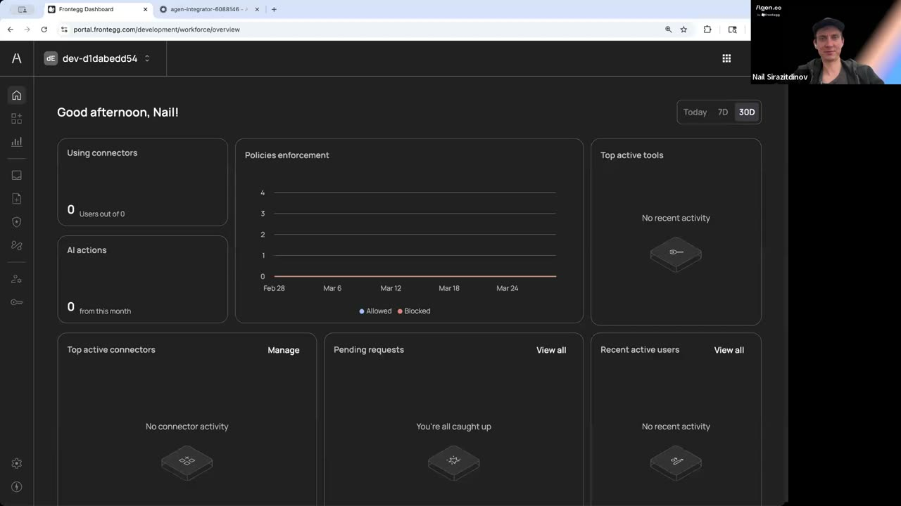
portal.frontegg.com/development/workforce/overview. Tenant ID dev-d1dabedd54. Widgets: Using connectors, Policies enforcement, AI actions, Top active connectors, Pending requests, Recent active users.The dashboard is read-only until data flows through. The seven widgets tell you what Agen tracks:
Before any employee can use Agen, you plug your existing IdP in. The demo uses Okta via SAML 2.0. The wizard walks you through the Okta side without you needing to know SAML.
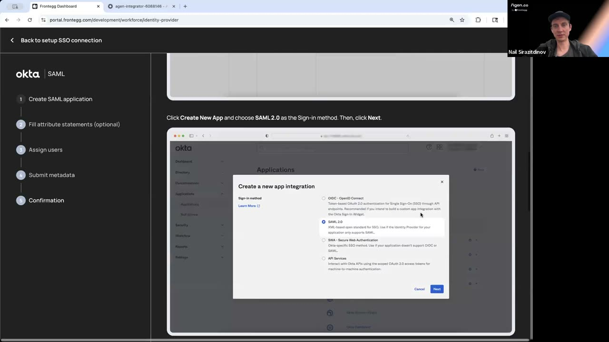
In Okta Admin: Applications → Create App Integration → pick SAML 2.0.
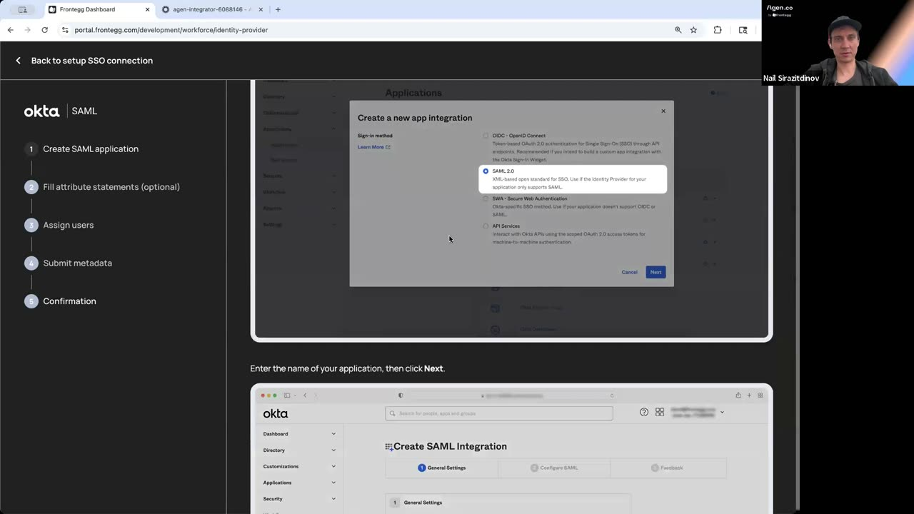
Okta and Agen need to agree on how user data (first name, last name, group memberships) travels in the SAML assertion. The wizard pre-fills the mapping.
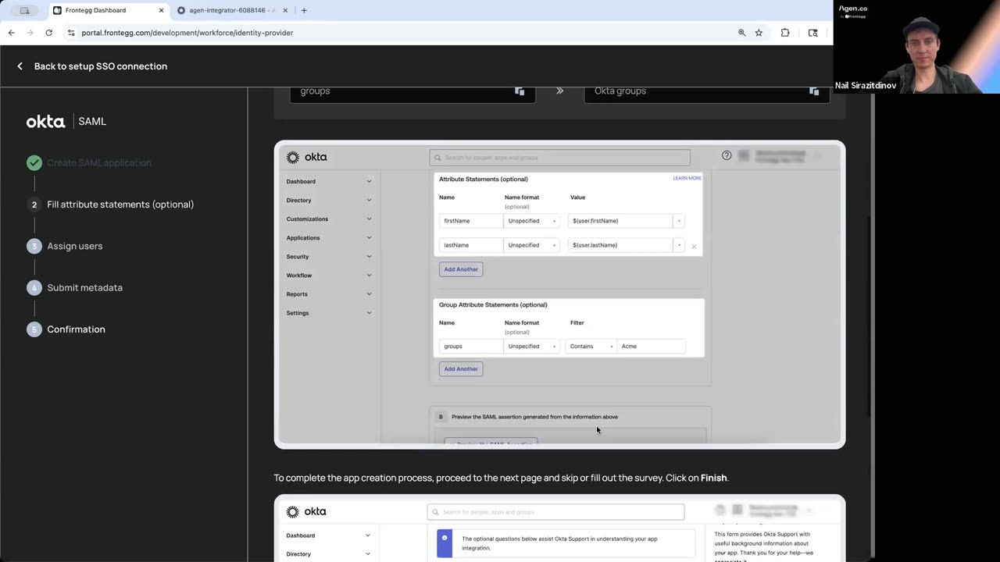
firstName → ${user.firstName}, lastName → ${user.lastName}, groups → Okta groups (Contains "Acme"). The group filter is how Agen scopes access based on which Okta group an employee belongs to.Decide who in your organization can use Agen. The simplest choice is to assign the "Everyone" group (all employees), then refine later with finer-grained Okta groups per team.
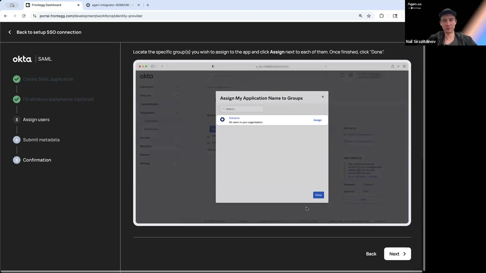
agen-pilot) in Okta, and only members of that group will be able to log in to Agen. When you're ready to expand, add more Okta groups - no Agen config change needed.
Once the SAML app exists in Okta, you can see Agen's view of the integration from the Okta admin console too.
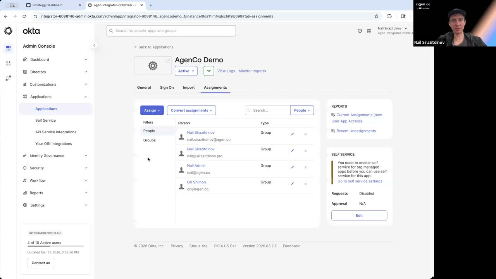
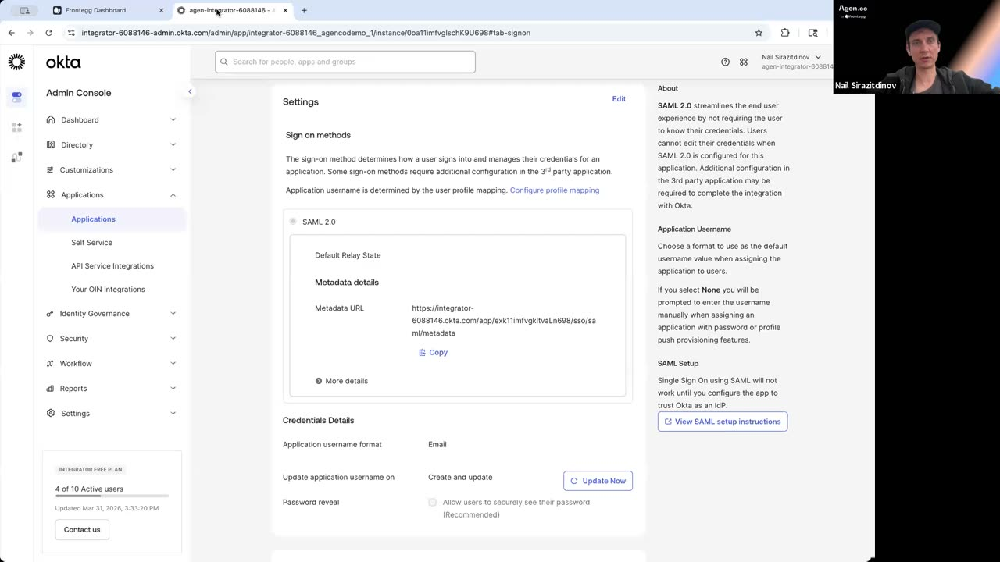
Now the fun part. Agen's connector library is where you decide which internal tools your employees' agents can reach. Each connector can be configured with either Agen-managed credentials or bring-your-own.
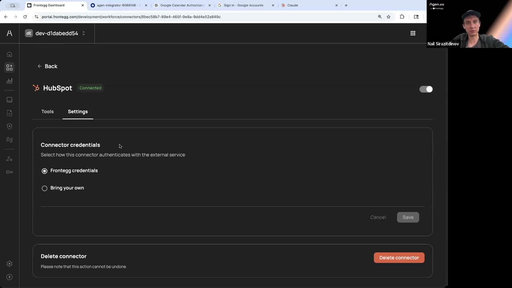
The two credential modes matter for different buyers:
Agen handles the OAuth app registration and token management for you. Fastest path - pick a tool, flip it on, done. Best for pilots and smaller deployments where you don't want to manage yet-another-OAuth-app.
You paste in your own HubSpot (or whatever) OAuth app credentials. Your legal/security team gets full provenance - traffic flows through your OAuth app, not Agen's. Best for regulated industries and enterprise security teams who want to own every credential.
Here's where the value shows up for employees. Once you've connected Agen, every Agen-provisioned connector appears directly in Claude's Organization settings → Connectors list. Employees don't set up MCPs themselves - Agen provisions them identity-scoped.
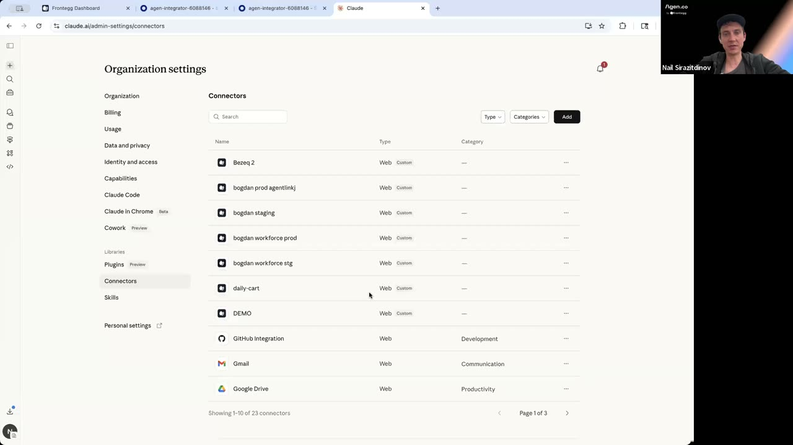
bogdan workforce prod, bogdan workforce stg, daily-cart, DEMO, plus ready-to-use ones like GitHub Integration, Gmail, Google Drive. Each appears as a "Web / Custom" or standard category.Each connector that appears in Claude is scoped to the employee logged in. So when two employees open Claude, they see the same list of connector names, but each one is wired to their own tokens and permissions - not a shared service account.
Same story in ChatGPT. The employee types a natural-language request, mentions the connector with @-syntax, and Agen handles the authorization flow.
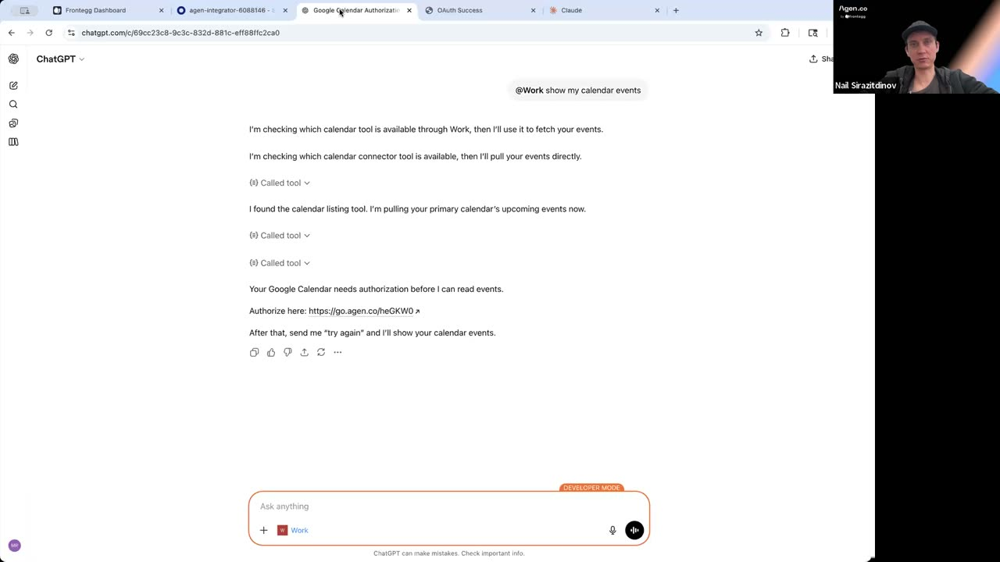
https://go.agen.co/heGKW0. After that, send me 'try again'."The OAuth flow is the key moment. Agen doesn't pre-connect every tool for every employee - that would over-grant permissions. Instead, when a user first asks for something a tool can't do without their consent, Agen kicks off just-in-time OAuth.
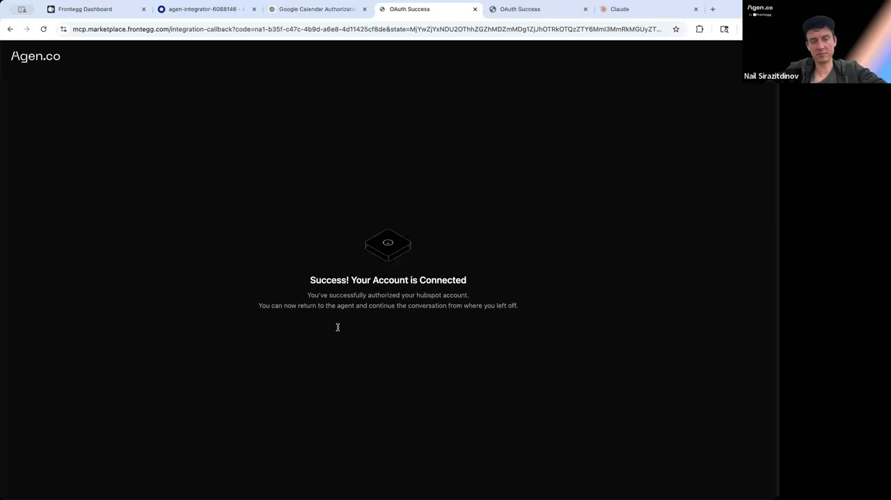
mcp.marketplace.frontegg.com/integration-callback: "Success! Your Account is Connected - you've successfully authorized your hubspot account. You can now return to the agent and continue the conversation where you left off."Agen doesn't replace your IdP - it defers to it. When you need to add or remove an employee, you do it in Okta (or Entra, or whichever IdP you connected), and the change propagates to Agen automatically.
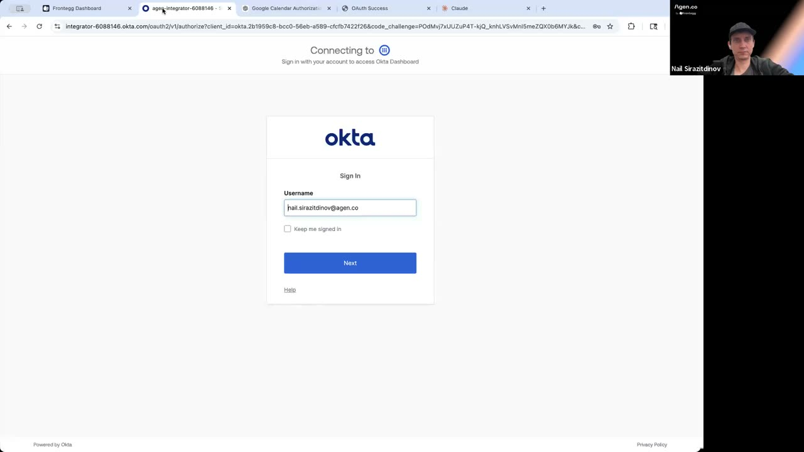
nail.sirazitdinov@agen.co.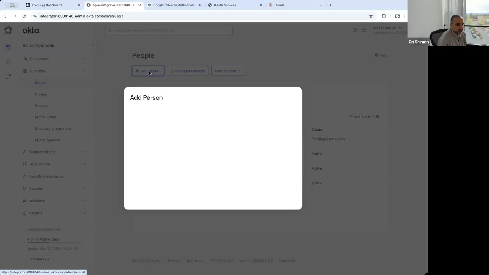
If you followed this end to end, your organization now has:
What you didn't have to do: build MCPs from scratch, register OAuth apps per employee, write policy code, or configure identity provisioning. All of that is the platform.